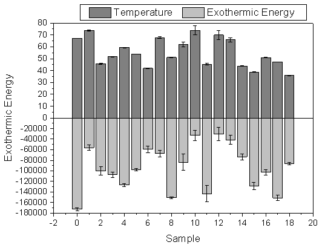
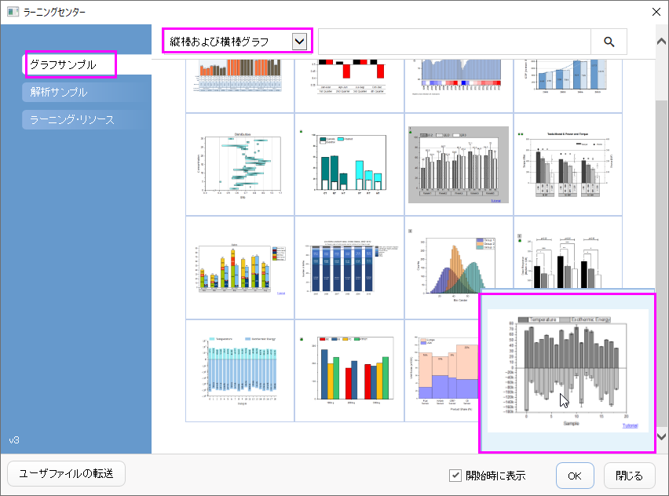
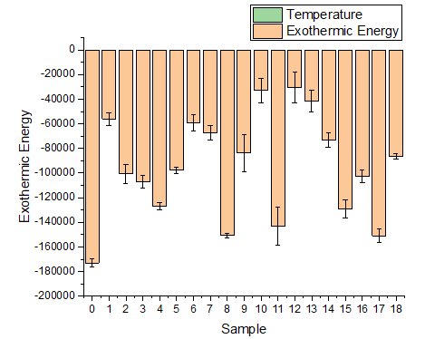
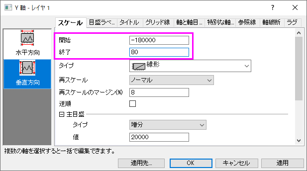
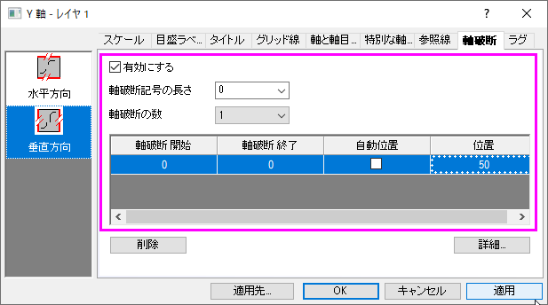
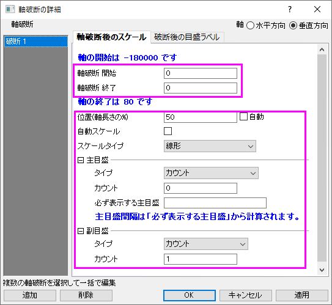
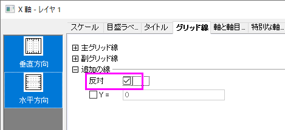
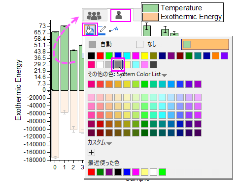
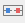
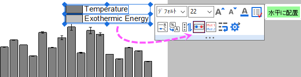

正負のYスケールの積み上げ棒グラフ
積み上げ棒グラフーカスタムYスケール
サマリー
負の棒のための広いYスケール範囲をもつグラフを作成するために、ギャップのない軸破断を追加する方法を説明します。

必要なOriginのバージョン: Origin 2015 SR0以降
学習する項目
このチュートリアルでは、以下の項目について説明します。
- エラーバーとともに積み上げ棒グラフを作成する
- ギャップなしの軸破断を有効にする
- 一つの軸をいくつかのセグメントに分け、それぞれのスケールを設定する
ギャップなしの軸破断を追加
- ヘルプ: ラーニングセンター メニューを選択、または キーボードのF11 キーを押して、ラーニングセンターを開きます。グラフサンプルタブを選択し、カテゴリーのドロップダウンリストから縦棒及び横棒グラフを選択します。下のグラフサンプルから「Column
and Bar Charts - Zero Length Break to Change Axis Scale」をダブルクリックしてサンプルを開きます。

Note:このチュートリアルは、チュートリアルデータプロジェクト<Origin EXE フォルダ>\Samples\TutorialData.opjuのCustom
Axis Scale to Show Different Scale フォルダと関連しています。
- ワークブック「Temperature & Exothermic Energy」をアクティブにし、全ての列を選択して、作図：棒、円、面積：積み上げ縦棒と選択して、エラーバー付きの縦棒グラフを作図します。

- この負の値と比較して正のデータの絶対値は小さすぎるため、グラフ内には正の値が表示されていません。
- そのため、Y = 0で軸破断を追加し、それらの2つのセグメントに対して異なる軸スケールを使用します。Y 軸をダブルクリックして軸ダイアログを開きY
軸（垂直アイコン）のスケールの開始を-180000、終了を80に設定します。

- 垂直アイコンがアクティブな状態で軸破断ページを開き、軸破断の数を1にします。記号が表示されないように、軸破断記号の長さを0に設定します。軸破断開始と軸破断終了を0に設定します。これで一度軸が分断しますが隙間は表示されなくなります。自動位置のチェックを外し、位置のセルに50と入力します。

- 詳細ボタンをクリックして軸破断後の範囲のスケールを設定します。

- 適用をクリックして、更新されたグラフを見ると、Y＝0の上と下の範囲で軸スケールが異なり、正の値のグラフが表示されたことがわかります。

グラフの編集
以下の編集操作により、サマリーで表示されている画像のグラフと同じようにグラフを編集します。
- Xスケールを-2から20に設定し、主目盛の増分を2に設定します。
- グリッド線タブで垂直アイコンと水平アイコンの両方を選択します(Ctrlキーを押しながらクリックで選択できます)。追加の線グループの反対にチェックを入れます。

- OKボタンをクリックしてこの軸ダイアログを閉じます。
- 正と負の棒の色を明るい灰色と灰色に変更するために、棒をクリックしてミニツールバーで単一タブ
 に移動し、塗色ボタン
に移動し、塗色ボタン をクリックし、カラーチューザーで正の棒を灰色に設定します。
をクリックし、カラーチューザーで正の棒を灰色に設定します。

負の棒をクリックして上記のように色を明るい灰色に変更します。
- 凡例を編集するために、凡例オブジェクトをクリックしてミニツールバーで水平に配置ボタンをクリックして同じ行に2つの凡例を並べます。

そうすると最終的なグラフが完成します。